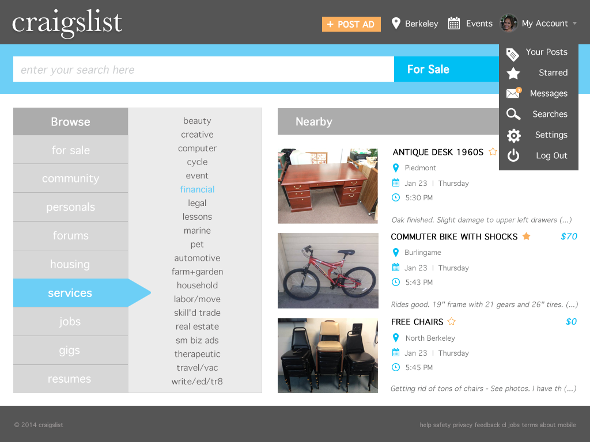
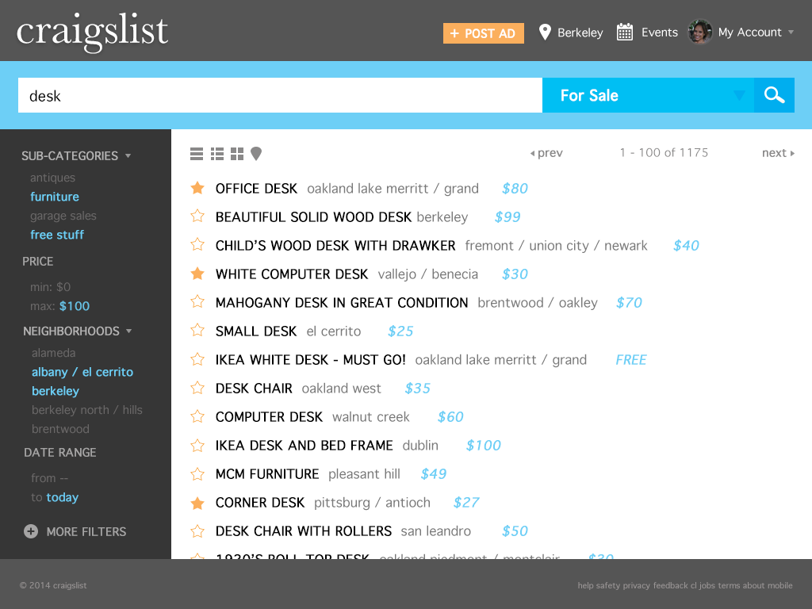
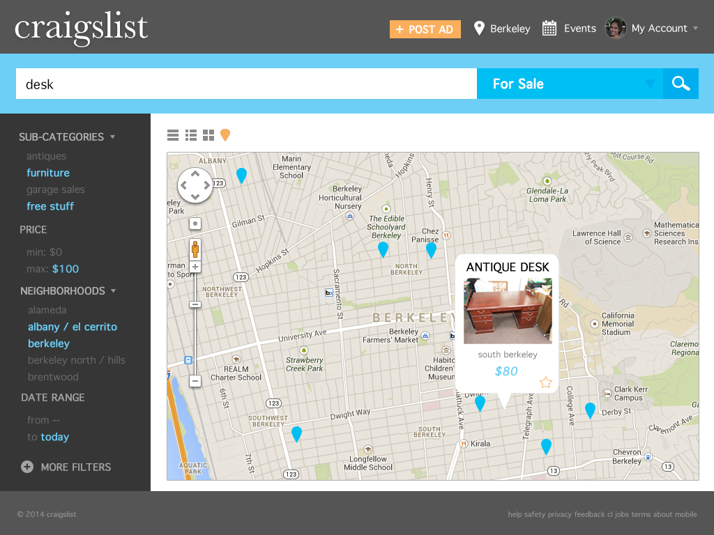

For a class project, we were assigned to redesign Craigslist in order to modernize it and make it more user-friendly. I chose to use flat design in this project to stay true to Craiglist's simplicity and to highlight its major functions. This design is much more streamlined, which would improve the website by making it faster and more functional. A grey color scheme with major accents of blue and minor accents of orange help to make functions quick to use and the website easy to navigate. This design maintains Craigslist's essence as a platform for discovering what's around you, but with a more clean and engaging interface.


